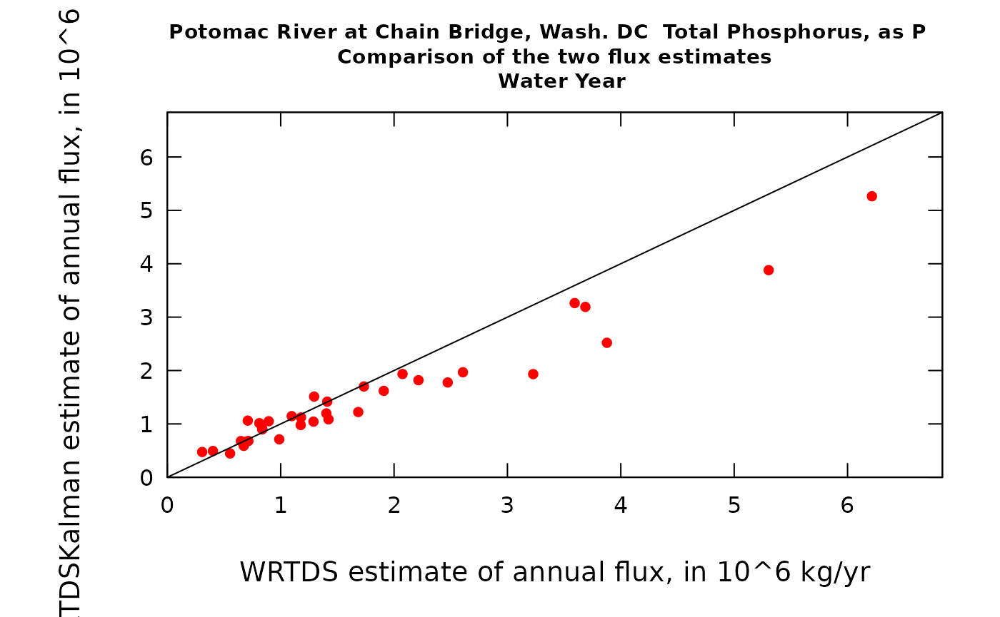
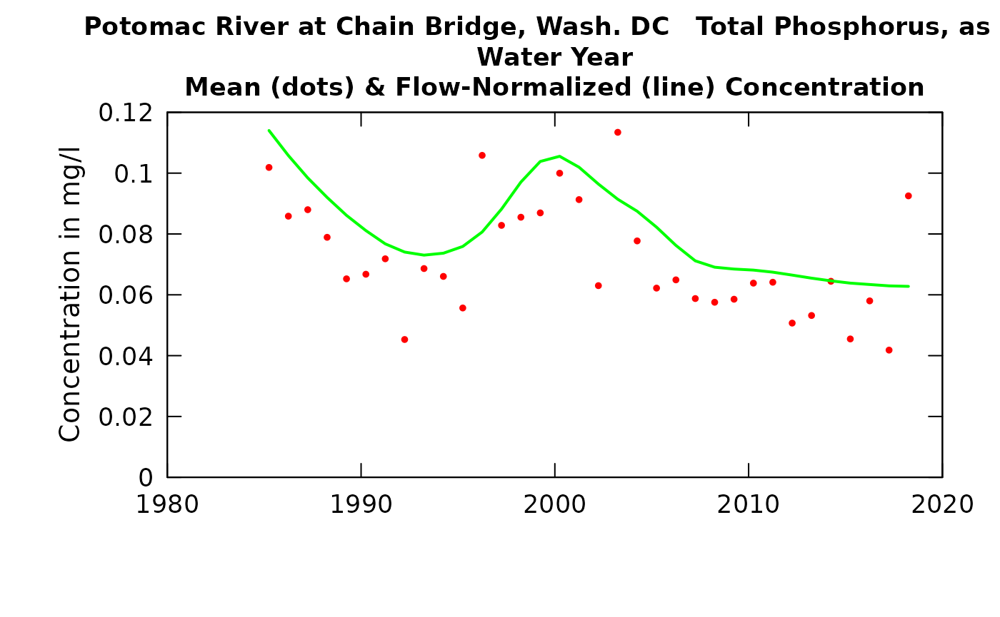
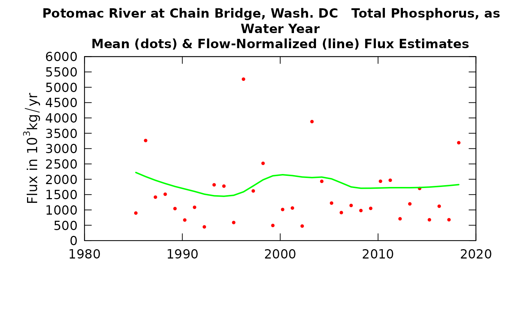

Important note! This is a work-in-progress. No future behavior on new functions are promised based during this development phase.
In order to run these functions, you will need to install the development version of EGRET. This can be done using the remotes package:
remotes::install_github("USGS-R/EGRET")
Introduction
This document provides a basic set of instructions for calculating WRTDS_K estimates of both concentration and flux (or “load”). It will not give the background or motivation for WRTDS_K. There are now two published papers that lay out the motivation for using this approach, describe the mathematics, and show the results compared to other methods. Those two publications can be found at: https://pubs.er.usgs.gov/publication/sir20195084 and https://agupubs.onlinelibrary.wiley.com/doi/full/10.1029/2019WR025338 .
The most important thing to know is that these are intended for use for providing the best possible estimates of the actual fluxes on each day, or month, or season, or year in the record. They are not intended for use in evaluating trends (which we would do using flow-normalized flux).
What one needs, in order to run this are the following items:
- Install the development version of
EGRETvia theremotespackage (see above). - A data set which must already be in the form of an EGRET workspace containing an eList that has all four components of an eList (INFO, Daily, Sample, surfaces). That is, it must be the data and a WRTDS model based on that data that is already estimated. The data set must be in the form of an “.RData” file that contains an eList, Nothing else needs to be in that file but if there is other stuff, that’s ok. The discussion and example shown here is carried out on a data set that contains no censored data (“less than values”) and it never has more than one observation on a given day. The description of the method and the examples run in the two papers mentioned are this kind of data set. In the last section of this vignette there will be an explanation of how the method has been generalized to handle these two special cases. The software presented here is able to properly handle data sets that have either or both of these properties (censoring and multiple observations per day).
library(EGRET) load("rockCr.tp.RData") # now we will run the WRTDS_K estimation (using the defaults for now) eList_K <- WRTDS_K(eList) print(summary(eList_K$Daily))
## Date Q Julian Month
## Min. :2006-01-01 Min. : 0.001699 Min. :56978 Min. : 1.000
## 1st Qu.:2009-03-09 1st Qu.: 0.024352 1st Qu.:58142 1st Qu.: 3.000
## Median :2012-05-16 Median : 0.053094 Median :59306 Median : 6.000
## Mean :2012-05-16 Mean : 0.177447 Mean :59306 Mean : 6.435
## 3rd Qu.:2015-07-24 3rd Qu.: 0.129974 3rd Qu.:60469 3rd Qu.: 9.000
## Max. :2018-09-30 Max. :16.140602 Max. :61633 Max. :12.000
##
## Day DecYear MonthSeq waterYear
## Min. : 1.0 Min. :2006 Min. :1873 Min. :2006
## 1st Qu.: 91.0 1st Qu.:2009 1st Qu.:1911 1st Qu.:2009
## Median :180.0 Median :2012 Median :1949 Median :2012
## Mean :181.1 Mean :2012 Mean :1949 Mean :2012
## 3rd Qu.:270.0 3rd Qu.:2016 3rd Qu.:1987 3rd Qu.:2015
## Max. :366.0 Max. :2019 Max. :2025 Max. :2018
##
## Qualifier i LogQ Q7
## Length:4656 Min. : 1 Min. :-6.378 Min. :0.003681
## Class :character 1st Qu.:1165 1st Qu.:-3.715 1st Qu.:0.034031
## Mode :character Median :2328 Median :-2.936 Median :0.076759
## Mean :2328 Mean :-2.806 Mean :0.177639
## 3rd Qu.:3492 3rd Qu.:-2.040 3rd Qu.:0.178184
## Max. :4656 Max. : 2.781 Max. :3.300126
## NA's :6
## Q30 yHat SE ConcDay
## Min. :0.007145 Min. :-2.848 Min. :0.2977 Min. :0.06238
## 1st Qu.:0.049918 1st Qu.:-2.143 1st Qu.:0.3661 1st Qu.:0.12879
## Median :0.111814 Median :-1.817 Median :0.4203 Median :0.17797
## Mean :0.178359 Mean :-1.733 Mean :0.4572 Mean :0.26460
## 3rd Qu.:0.234119 3rd Qu.:-1.468 3rd Qu.:0.5320 3rd Qu.:0.26421
## Max. :1.354904 Max. : 1.358 Max. :0.7834 Max. :5.39851
## NA's :29
## FluxDay FNConc FNFlux GenFlux
## Min. : 0.014 Min. :0.09381 Min. : 0.4727 Min. : 0.014
## 1st Qu.: 0.282 1st Qu.:0.16312 1st Qu.: 1.3266 1st Qu.: 0.284
## Median : 0.704 Median :0.23973 Median : 4.0625 Median : 0.681
## Mean : 19.701 Mean :0.26303 Mean : 19.3821 Mean : 17.837
## 3rd Qu.: 2.699 3rd Qu.:0.33200 3rd Qu.: 14.4545 3rd Qu.: 2.373
## Max. :6929.255 Max. :0.81444 Max. :545.3019 Max. :6936.258
##
## GenConc
## Min. :0.0500
## 1st Qu.:0.1217
## Median :0.1715
## Mean :0.2482
## 3rd Qu.:0.2417
## Max. :6.9288
## The object being created here is a data frame called DailyK. It looks just like Daily but with some columns added. What are the extra columns?
trueConc is the measured concentration on the days when there is a value, many will be NA
trueFlux (in kg/day) flux for the days when concentration is measured
stdResid (dimensionless) this is the standardized residual from the WRTDS model estimate, for the days when concentration is measured. It is (ln(trueConc) - yHat) / SE.
yHat is the WRTDS estimate of the natural log of concentration and SE is the standard error of the WRTDS model for the specific time, discharge, and season.
GenFlux is the WRTDS_K estimate of the flux for each day (in kg/day) GenConc is the WRTDS_K estimate of the concentration for each day (in kg/day)
Summarizing results at an annual time step
Now we can take the results from the DailyK data frame and compute annual flux values. We will do that for the regular WRTDS and for WRTDS_K (using the data in two columns of DailyK the FluxDay column and the GenFlux column). We can also do these computations for some period of analysis other than the water year, but for now, we will just show the water year computations. The function used is called computeAnnual and it produces a data frame called AnnualResults and also produces some graphics that show the two types of results. Notice that AnnualResults has some attributes that go with it that will tell you what the period of analysis was. They are printed here. Note that the function computeAnnual actually does more than the computations, it prints out the content of AnnualResults and it also makes two graphs that tell you some things about how the two types of estimates compare to each other.
AnnualResults <- setupYears(eList_K$Daily) plotWRTDS_K(eList_K)

## DecYear Q Conc Flux ConcDay FluxDay FNConc
## 1 2007.247 0.17898031 0.2962950 28.777859 0.2962950 10.503918 0.2983506
## 2 2008.248 0.27055586 0.3516980 44.742356 0.3516980 16.375702 0.2899365
## 3 2009.247 0.26025897 0.3759310 26.165365 0.3759310 9.550358 0.2812448
## 4 2010.247 0.27538327 0.3747984 24.359202 0.3747984 8.891109 0.2729362
## 5 2011.247 0.14896523 0.2471670 14.038737 0.2471670 5.124139 0.2646126
## 6 2012.248 0.08488400 0.1868972 4.034956 0.1868972 1.476794 0.2569138
## 7 2013.247 0.13601784 0.2226408 9.311495 0.2226408 3.398696 0.2517849
## 8 2014.247 0.10545581 0.1980464 8.466954 0.1980464 3.090438 0.2468856
## 9 2015.247 0.20777738 0.2707080 23.161558 0.2707080 8.453969 0.2419903
## 10 2016.248 0.25410346 0.2935102 22.324440 0.2935102 8.170745 0.2372866
## 11 2017.247 0.19541107 0.2342773 33.088650 0.2342773 12.077357 0.2322257
## 12 2018.247 0.09552708 0.1734324 9.414387 0.1734324 3.436251 0.2275343
## FNFlux GenConc GenFlux PeriodLong PeriodStart
## 1 21.65393 0.3035116 11.412228 12 10
## 2 21.04004 0.3027088 14.377783 12 10
## 3 20.46458 0.3822140 9.926332 12 10
## 4 19.90073 0.3130897 7.960983 12 10
## 5 19.35225 0.2414275 4.921882 12 10
## 6 18.83355 0.1980234 1.548080 12 10
## 7 18.42560 0.1978812 2.656734 12 10
## 8 18.02467 0.1976627 3.171315 12 10
## 9 17.63325 0.2217504 6.268860 12 10
## 10 17.25350 0.2302717 5.707152 12 10
## 11 16.88022 0.2421715 10.410761 12 10
## 12 16.52462 0.1714012 3.403874 12 10| DecYear | Q | ConcDay | GenConc | FluxDay | GenFlux |
|---|---|---|---|---|---|
| 2007.247 | 0.1789803 | 0.2962950 | 0.3035116 | 10.503918 | 11.412228 |
| 2008.248 | 0.2705559 | 0.3516980 | 0.3027088 | 16.375702 | 14.377783 |
| 2009.247 | 0.2602590 | 0.3759310 | 0.3822140 | 9.550358 | 9.926332 |
| 2010.247 | 0.2753833 | 0.3747984 | 0.3130897 | 8.891109 | 7.960983 |
| 2011.247 | 0.1489652 | 0.2471670 | 0.2414275 | 5.124139 | 4.921882 |
| 2012.248 | 0.0848840 | 0.1868972 | 0.1980234 | 1.476794 | 1.548080 |
| 2013.247 | 0.1360178 | 0.2226408 | 0.1978812 | 3.398696 | 2.656734 |
| 2014.247 | 0.1054558 | 0.1980464 | 0.1976627 | 3.090438 | 3.171315 |
| 2015.247 | 0.2077774 | 0.2707080 | 0.2217504 | 8.453969 | 6.268860 |
| 2016.248 | 0.2541035 | 0.2935102 | 0.2302717 | 8.170745 | 5.707152 |
| 2017.247 | 0.1954111 | 0.2342773 | 0.2421715 | 12.077357 | 10.410761 |
| 2018.247 | 0.0955271 | 0.1734324 | 0.1714012 | 3.436251 | 3.403875 |
The content of AnnualResults is fairly obvious.
DecYear is the mean day of the year for the period of analysis, for example, water year 2007 would have a mean day of 2007.247 (end of March of 2007).
Q is the mean discharge in m^3/s.
ConcDay is the mean value of concentration for the year from the regular WRTDS model, in mg/L.
GenConc is the mean value of concentration for the year from the WRTDS_K model, in mg/L.
FluxDay is the sum of the daily flux values from the regular WRTDS model, in units of metric tons (same as 10^3 kg).
GenFlux is the sum of the daily flux values from the WRTDS_K model, in units of metric tons (same as 10^3 kg).
The first graph compares the time series of the two flux records: WRTDS in red and WRTDS_K in green. This graph is fairly typical of what we have seen in a number of studies so far. There are a number of years in which the two estimates are practically identical (e.g. 2011, 2012, 2014) but there are a few cases where they diverge significantly. In this example, in those cases the WRTDS_K estimate is substantially lower than the WRTDS estimate. What that means is that the tendency for WRTDS to predict values that are too high has been reduced. It happens that the flux bias statistic for this data set is 0.35, suggesting that the model has a tendency to estimate fluxes that are too high.
The second graph is just another way to look at these same results, but as a scatter plot of results from the two methods. What we see is a tendency for a fair number of years to plot close to the 1:1 line but four of them are substantially below the line (meaning their WRTDS_K estimates are lower than their WRTDS estimates).
Seeing this, we’d like to dig in a bit and see what’s going on.
Looking at parts of the record to see how WRTDS and WRTDS_K are working
We have a function that produces graphics that show, as a time series, the daily true values (for the days that have samples), the WRTDS estimates for every day, and the WRTDS_K estimates for every day. We could plot the whole record, but the ups and downs of the curves would be so tight that we really couldn’t see what’s going on. So, we let the user pick a time slice to look at. It produces two plots, the first is for concentration (it is typically easier to see what is happening in the estimation with the concentration graphs) and the second is for flux (discharge plays such a big role here that the propagation of error from the concentrations gets somewhat obscured, but flux is, after all, what we are interested in here).
We will look at two examples here, in each case looking at about a half a year. The first one (2018) is a year in which there was very good agreement between the estimates, and the second one (2015) is a year with a large difference between the methods. Let’s see what those results look like.
plotTimeSlice(eList_K, start = 2018.2, end = 2018.7, conc = TRUE)

plotTimeSlice(eList_K, start = 2018.2, end = 2018.7, conc = FALSE)
plotTimeSlice(eList_K, start = 2015.2, end = 2015.7, conc = TRUE)

plotTimeSlice(eList_K, start = 2015.2, end = 2015.7, conc = FALSE)
What can we learn from these figures? The first, which is a half year in 2018. Note before we start that all of these graphs show either concentration or flux on a log scale. We will start with the concentration graph. We see that there are 7 observed values. When we compare the observed values (red dots) with the WRTDS estimates (black line) for each of those days we see two negative residuals followed by a positive residual a negative a positive and the final two have residuals that are close to zero. Once we get past the second observation (around 2018.25) we see the WRTDS_K curve (in green) going back a forth from being a little above the WRTDS curve to a little below. This alternation indicates that the errors of the model are not ones that persist for very many days and thus the corrections based on these errors don’t persist for very many days. One other thing to note is that the model suggests a big spike in concentration around 2018.4 but there are no samples very close in time to this event (there is a gap of about a month) and the big discharge event took place about half way between these two sample dates. Given this lack of information close to the date of the large flow event, the WRTDS_K will not result in much of a change during this event as compared to what we estimate from WRTDS. The upshot of all of this is that the residuals information doesn’t make much difference during this half year in WRTDS_K results and we really don’t change our estimate by much.
Now, contrast this with the 2015 results. Here we see the first residual being very near zero, but after that every one of them is substantially negative (below the black line). What this is telling us is that something was going on in this part of 2015 such that concentrations were always lower than the WRTDS model (based on the years around 2015, both before and after). We don’t happen to know why this departure exists (perhaps it relates to what tributaries were most active or to something about antecedent conditions). What it does tell us is that generally, throughout the period 2015.35 through 2015.65 it is a good guess that concentrations are likely to have been lower than what the WRTDS model estimates they should be. The math of the WRTDS_K model ends up giving us a green curve that is always below the black curve throughout this period. That means, when the WRTDS_K estimate is summarized for the whole 2015 water year it will be a good deal lower than what WRTDS would give us. Looking at the last of the four graphs (for flux), even though the black and green curves track pretty close to each other the ratio of the two mean fluxes is 0.45. So, the persistant negative residuals causes us to make a major downward adjustment to our estimated flux for the period.
As a generalization we can say that WRTDS_K will result in large adjustments when two things happen: 1) there is a strong persistence of the residuals (long runs of positives or long runs of negatives), and 2) when there are samples collected on or close to the days of maximum flux and they show large absolute residuals.
One final note. These graphs also have an additional bit of information. They say, in their title “Ratio of means is xx”. This ratio is specific to the time slice shown in the plot (not the whole record being estimated) and the ratio stated is WRTDS_K estimate divided by the regular WRTDS estimate.
Two options available (setting rho and setting niter)
One of the things that the user must select is the rho value. We don’t have a strong theoretical basis for selecting the right value of rho, although our research has shown that the results are not highly sensitive to it. In the paper published in Zhang and Hirsch (2019) (see the second URL near the start of this document) we do make some generalizations about the selection of rho. We found that for nitrate a slightly higher rho value (such as 0.95) may be better than for other constitutents such as TP, OrthoP, Suspended Sediment, or Chloride for which values like 0.85 or 0.9 may be better. The somewhat different behavior for nitrate is explained by the fact that at many sites there are some other factors probably related to denitrification the discharge and term does not have a great amount of explanatory power in the WRTDS model. As such, placing more reliance on the results of samples that are close in time is appropriate. One can experiment with different values of rho because it is an argument in the makeDailyK function.
We can re-run the analysis with rho of 0.85 and see how much difference it makes. The table shown here lists the ratio the difference in annual values divided by the original annual value (so multiplying these numbers by 100 would result in differences in percent).
## [1] 0.85## [1] 200AnnualResults2 <- setupYears(eList_2$Daily) AnnualResults2 <- AnnualResults2[,c("ConcDay", "GenConc", "FluxDay", "GenFlux")] Ratios <- (AnnualResults2 - AnnualResults[, c("ConcDay", "GenConc", "FluxDay", "GenFlux")]) / AnnualResults[, c("ConcDay", "GenConc", "FluxDay", "GenFlux")] row.names(Ratios) <- round(AnnualResults$DecYear, 2) kable(Ratios)
| ConcDay | GenConc | FluxDay | GenFlux | |
|---|---|---|---|---|
| 2007.25 | 0 | 0.0039808 | 0 | 0.0063137 |
| 2008.25 | 0 | 0.0422655 | 0 | 0.0598372 |
| 2009.25 | 0 | -0.0042541 | 0 | 0.0022497 |
| 2010.25 | 0 | 0.0580543 | 0 | 0.0393209 |
| 2011.25 | 0 | 0.0005039 | 0 | 0.0060360 |
| 2012.25 | 0 | -0.0100483 | 0 | 0.0034167 |
| 2013.25 | 0 | 0.0253267 | 0 | 0.0499078 |
| 2014.25 | 0 | 0.0021595 | 0 | 0.0067826 |
| 2015.25 | 0 | 0.0509660 | 0 | 0.0386905 |
| 2016.25 | 0 | 0.0638065 | 0 | 0.0799114 |
| 2017.25 | 0 | -0.0000190 | 0 | 0.0450006 |
| 2018.25 | 0 | 0.0014377 | 0 | -0.0205527 |
What we see here is that the change in rho from 0.9 to 0.85 makes less than a 10% difference in any of the years.
Setting the number of iterations to 200 (the default) seems to be sufficient. We can set a different random number seed and see how much difference it makes in the results.
eList3 <- WRTDS_K(eList, seed = 1) AnnualResults3 <- setupYears(eList3$Daily) AnnualResults3 <- AnnualResults3[,c("ConcDay", "GenConc", "FluxDay", "GenFlux")] Ratios <- (AnnualResults3 - AnnualResults[, c("ConcDay", "GenConc", "FluxDay", "GenFlux")]) / AnnualResults[, c("ConcDay", "GenConc", "FluxDay", "GenFlux")] row.names(Ratios) <- round(AnnualResults$DecYear, 2) kable(Ratios)
| ConcDay | GenConc | FluxDay | GenFlux | |
|---|---|---|---|---|
| 2007.25 | 0 | -0.0271695 | 0 | -0.0309132 |
| 2008.25 | 0 | -0.0245820 | 0 | -0.0582342 |
| 2009.25 | 0 | 0.0082574 | 0 | 0.0161088 |
| 2010.25 | 0 | -0.0053314 | 0 | -0.0064307 |
| 2011.25 | 0 | 0.0065658 | 0 | 0.0194969 |
| 2012.25 | 0 | -0.0063160 | 0 | -0.0497557 |
| 2013.25 | 0 | -0.0121493 | 0 | -0.0252580 |
| 2014.25 | 0 | 0.0280695 | 0 | 0.0362018 |
| 2015.25 | 0 | -0.0062751 | 0 | -0.0038074 |
| 2016.25 | 0 | -0.0012663 | 0 | -0.0265826 |
| 2017.25 | 0 | -0.0057908 | 0 | 0.0121248 |
| 2018.25 | 0 | 0.0261079 | 0 | 0.1646035 |
This table shows us that, at worst the individual annual fluxes differ by about 11% and many of them differ by less than 2% in successive runs with different seeds The annual concentrations never differ by more than about 2%. This suggests that 200 is a sufficient number of iterations to run to obtain a stable result. For final calculations for publication one might want to specify niter = 500 or niter = 1000 in the call to makeDailyK, but the idea here is not perfection, but rather to make a reasonable adjustment of the flux record to account for the serial correlation of the residuals.
What about putting these results into the plotConcHist or plotFluxHist graphs
Typically when we do some type of trend study we may want to create graphic outputs showing the Flow Normalized values (connected by a line) and the estimated annual values (as dots). If you want to put the WRTDS_K values on these graphs you can use the functions (still in development), setting the argument plotGenConc or plotGenFlux to TRUE.
Here they are being used.
plotConcHist(eList_K, plotGenConc = TRUE)

plotFluxHist(eList_K, plotGenFlux = TRUE, fluxUnit = 8)

Operationalizing this in a batch job
The process after installing the development version of EGRET.
- load the workspace for a site
- give the command eList <- WRTDS_K(eList)
- give the command AnnualResults <- setupYears(eList)
- then save the object AnnualResults
- plot the results plotWRTDS_K(eList)
- the tables and graphs you will probably want can all be made from the content of Annual Results, and the meta data are all in the INFO object in the eList
- if the interest is in only one season of the year then modify the call to setupYears by adding the paStart and paLong arguments for the season you are interested in.
- note that setupYears has two attributes that tell the paStart and paLong, so you can always tell what you used as your period of analysis
How the code handles two kinds of special situations
The description in the two publications mentioned here accurately describes how the computations work in the situation where no days in the record have more than one observed value and where no censored data exist in the record. The following section describes how the code handles data sets that violate one or both of these constraints. You don’t really have to understand this to use the software, but for completeness we are describing how these situations are handled in the code.
Censored data (less than values)
In order to fill in estimates for all the days with no samples, we must have a known value on each of the sampled days. We use this known value to compute a residual on the sampled day. These known residuals on either side of a data gap are what initialize the AR(1) process that fills in all the missing values of residuals in the gap. It would be incorrect to set these censored values with the reporting limit (ConcHigh) and also incorrect to set these censored values to half the reporting limit (this would be ConcAve). The solution is this. Since we are estimating the entire time series of residuals using Monte Carlo simulation we can also use Monte Carlo methods to create an appropriate value for the sampled day. For each replicate of the whole time series we will generate random values for each of the censored sample days. We already have a function that allows us to generate these random realizations of the censored day concentration. It is the function in EGRET called makeAugmentedSample. What it does is that on each day with a censored value it defines a truncated log normal distribution and takes a random sample from that distribution to represent the unknown true value on that day. The truncated lognormal distribution is defined by the WRTDS model for that day. It uses estimates of the conditional mean of the log concentration and the conditional standard deviation of the log concentration and assumes that the conditional distribution of the logs is normal. The distribution is not the whole normal distribution, rather it is made up of the left hand tail of the distribution. The truncation point is at the log of the reporting limit for the data value. What this means is that for the censored day, we can create a Monte Carlo sample value of the log of concentration by sampling from that truncated normal distribution (which is specific to the conditions on that day). Note here that the random observation values generated here are NOT used to estimate the WRTDS model; that is done in the usual fashion using the censored sample information.
So now the data generation scheme is done in two phases for each iteration: First we fill in values for each of the censored days and these, combined with the uncensored values constitute the sample data set we will work from. Then we use the AR(1) process to fill in the missing days between all the sampled days. Then when we move on to the next iteration we start all over with estimating all the censored days again and then fill the gaps, etc.
When we plot these data sets using plotTimeSlice, when there are censored values they plot in the blue color and they are located on the vertical scale at the reporting limit (meaning that the true value lies somewhere at or below the blue dot).
Multiple observations on a day
When a day has more than one observation (i.e. more than one sample value) the approach we use here is much the same as what we used in the censored value situation. What we need in order to generate the full WRTDS_K record is a set of unique values for the sampled days. So, for any day with two or more samples we will randomly pick one of them and use it as an end point for the adjacent gap periods. Then once we pick it we generate the values between the sampled days regardless of whether the sample value used is a unique value for that day or if it is randomly selected from the multiple values observed on that day. Then on the next iteration we randomly select the values for these multiply sampled days and proceed with the AR(1) process to fill in between the sampled days. In the plot produced by plotTimeSlice all of the observations are shown as red dots. Thus if there are multiple sample values on a given day they will plot along a vertical line situated on that day.
An example with both special issues
load("test.RData") # the name of your EGRET workspace eList <- WRTDS_K(eList) plotTimeSlice(eList, start = 2010.2, end = 2010.4, conc = TRUE)
plotTimeSlice(eList, start = 2010.2, end = 2010.4, conc = FALSE)

If we look at the concentration graph we see two things of interest here. Right after 2010.30 there appear to be three days with censored values with a reporting limit at 0.004 mg/L. What is interesting here is that generally the green line (WRTDS_K estimates) go right through the samples (the red dots), here they don’t. That is because in the Monte Carlo simulation to “true” samples generated are always less than the reporting limit (the blue dots) so the green line lies below these points. Also, there is a case at around 2010.38 where there are two data points (red points) that lie one directly above the other. These are two sample values from the same day. The WRTDS_K estimate (green line) goes right between these two sample values because in the Monte Carlo simulation sometimes the sample value is the lower one and sometimes it is the upper one and the result is that the estimate lies between the two.
Final thoughts
In a few months we expect to better integrate these WRTDS_K computations into EGRET for a new release of EGRET, but for now (December 2019) this is the way it should be implemented. Feedback is welcome before we more fully integrate it. The citations for the two papers that introduce and experiment with WRTDS_K are as follows.
Lee, C.J., Hirsch, R.M., and Crawford, C.G., 2019, An evaluation of methods for computing annual water-quality loads: U.S. Geological Survey Scientific Investigations Report 2019–5084, 59 p., https://doi.org/10.3133/sir20195084.
Zhang, Q. and Hirsch, R.M., 2019. River water‐quality concentration and flux estimation can be improved by accounting for serial correlation through an autoregressive model. Water Resources Research. https://agupubs.onlinelibrary.wiley.com/doi/epdf/10.1029/2019WR025338